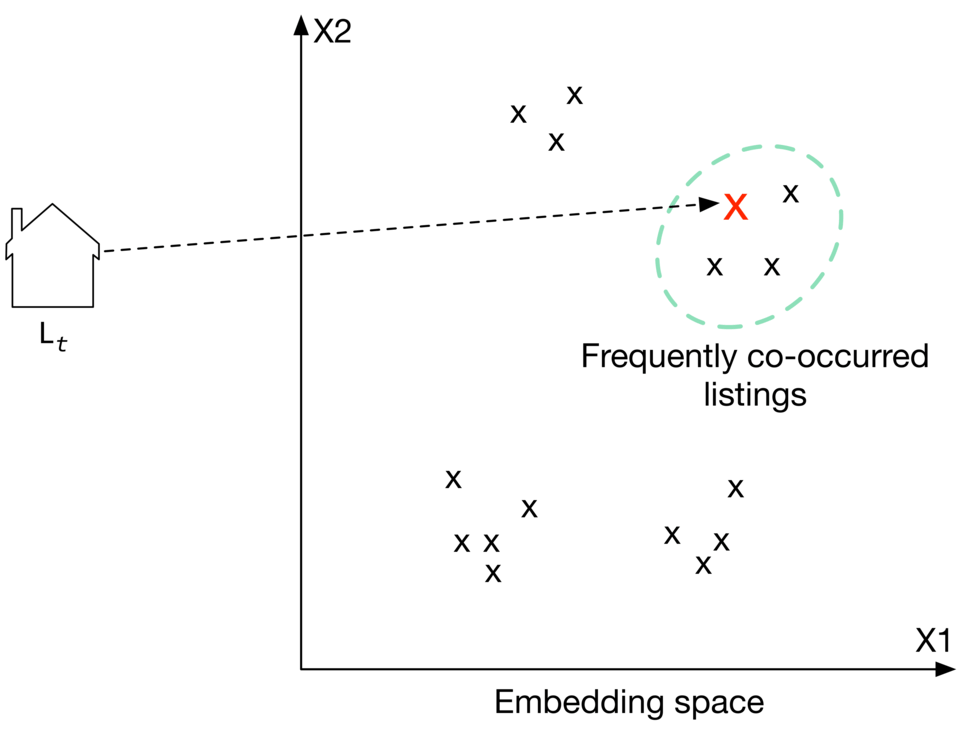
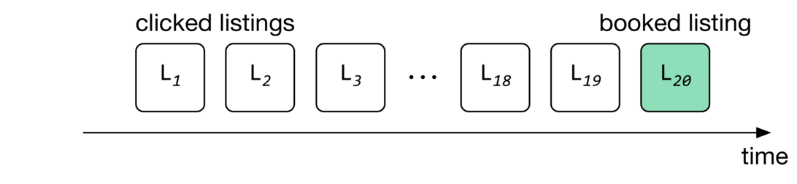
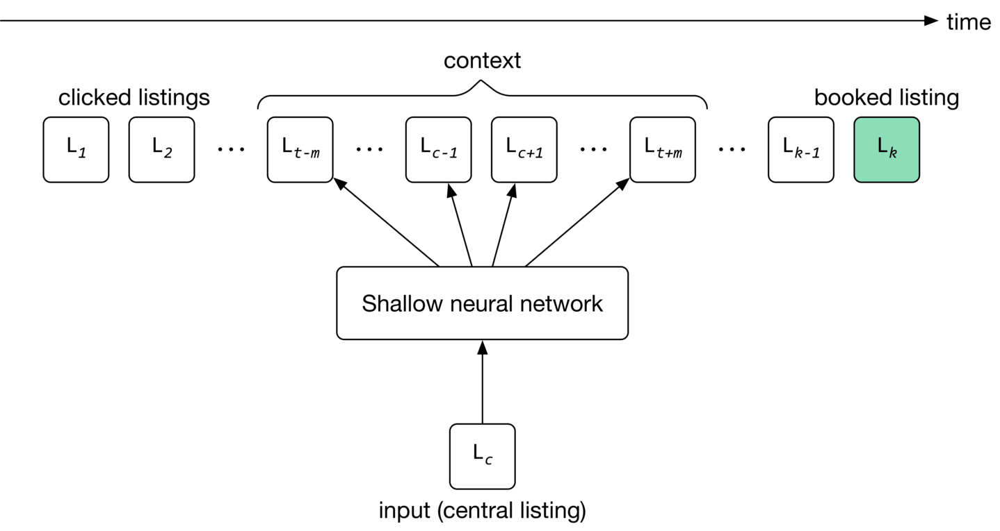
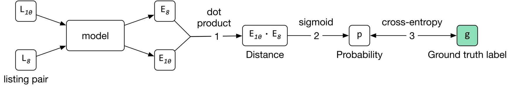
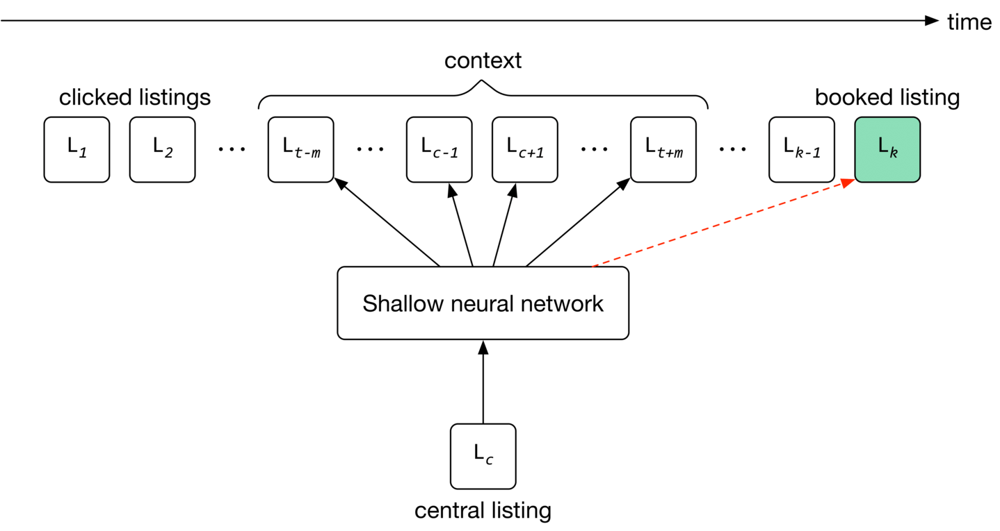

Similar Listings on Vacation Rental Platforms
Recommending items similar to those a user is currently viewing, is a key technology that allows people to discover potentially relevant content on large platforms. For example, Airbnb recommends similar accommodation listings, Amazon recommends similar products, and Expedia recommends similar experiences to users.
![Image represents a webpage or app screen displaying a listing for 'Modern Mountain Studios with Incredible views'. The top section contains navigation elements (back, forward, refresh icons, and a file icon), followed by a search bar (empty). Below this, the main listing shows a 4.97-star rating and 1529 reviews. Four pale yellow placeholders likely represent images of the studio. Buttons for 'Share' and 'Save' are present. Details about the listing ('2 guests - Studio - 2 beds - 1 bath') are provided. Finally, a section labeled 'Similar Listings' displays five pale green placeholders, presumably for similar property images. The overall layout is clean and simple, typical of a real estate or vacation rental website. Three small circles in the upper right corner might represent user account settings or notifications.](images/ch09-similar-listings-on-vacation-rental-platforms-img-f7bb21a8.png)
In this chapter, we design a "similar listings" feature which resembles those used by vacation rental websites such as Airbnb and Vrbo. When a user clicks a specific listing, a list of similar listings is recommended to them.
Clarifying Requirements
Here is a typical interaction between a candidate and an interviewer.
Candidate: Can I assume the business objective is to increase the number of bookings?
Interviewer: Yes.
Candidate: What is the definition of "similarity"? Are the recommended listings expected to be similar to the listing that a user is currently viewing?
Interviewer: Yes, that's correct. Two listings are defined as similar when they are in the same neighborhood, city, price range, etc.
Candidate: Are the recommended listings personalized to users?
Interviewer: We want this feature to work for both logged-in and anonymous users. In practice, we treat the two groups differently and apply personalization to logged-in users. However, for simplicity, let's assume we treat logged-in and anonymous users equally.
Candidate: How many listings are available on the platform?
Interviewer: 5 million listings.
Candidate: How do we construct the training dataset?
Interviewer: Good question. For this interview, let's assume we use user-listing interactions only. The model doesn't leverage users' attributes, such as age or location, or a listing's attributes, like price and location, at all.
Candidate: How long does it take for new listings to appear in the similar listings result?
Interviewer: Let's assume new listings are okay to appear as recommendations one day after being posted. During this time, the system collects interaction data for new listings.
Let's summarize the problem statement. We are asked to design a "similar listings" feature for vacation rental platforms. The input is a specific listing that a user is currently viewing, and the output is a ranked list of similar listings the user is likely to click on next. The recommended listings should be the same for both anonymous and logged-in users. There are around 5 million listings on the platform, and new listings can appear in recommendations after one day. The business objective of the system is to increase the number of bookings.
Frame the Problem as an ML Task
Defining the ML objective
The sequence of listings that a user clicks on usually have similar characteristics, such as being in the same city or having similar price ranges. We rely on this observation to define the ML objective as accurately predicting which listing the user will click next, given the listing the user is currently viewing.
Specifying the system’s input and output
As shown in Figure 9.2, the "similar listings" system takes a listing a user is currently viewing as input and then outputs a ranked list of listings, sorted by the probability of this user clicking on them.
![Image represents a simplified system for recommending similar listings. A 'Currently-viewing listing,' depicted as a house icon, is input into a 'Similar listings system' (a rectangular box). This system processes the information about the currently viewed listing and outputs a list of 'Recommended similar listings.' These recommendations are shown as four house icons (L₁, L₂, L₃, L₄) within a dashed-line box labeled 'Recommended similar listings.' Arrows indicate the flow of information: from the currently viewed listing to the system, and then from the system to the recommended listings. The system implicitly uses some algorithm or model to determine similarity between listings, based on features not explicitly shown in the diagram (e.g., location, price, size, features).](images/ch09-similar-listings-on-vacation-rental-platforms-img-d3da6cb5.png)
Choosing the right ML category
Most recommendation systems rely on users' historical interactions to understand their long-term interests. However, such recommendation systems may not be good at solving the similar listings problem. In our situation, recently viewed listings are more informative than those viewed a long time ago. In this case, a session-based recommendation system is commonly used.
Like Airbnb, many e-commerce and travel booking platforms rely more on short-term interests to make recommendations. In systems where high-quality recommendations depend more on recent interactions than long-term interests, a session-based recommendation is often a substitute for traditional recommendation systems. A session-based recommendation makes recommendations based on the user's current browsing session. Now, let's take a closer look at session-based recommendation systems.
Session-based recommendation systems
A session-based recommendation system aims to predict the next item, given a sequence of recent items browsed by a user. In the system, users’ interests are context-dependent and evolve fast. A good recommendation heavily depends on the user’s most recent interactions, not their generic interests.
![Image represents a sequence of data transformations or a pipeline, depicted using icons. It starts with an icon resembling a t-shirt, which is then processed through a series of stages represented by icons: a shoe, a tall rectangular box suggesting a data processing unit or model, a pair of shorts, and finally a winter hat with a snowflake detail. Each stage is connected to the next by a rightward-pointing arrow, indicating the flow of data. The final output, represented by a question mark, suggests an unknown or yet-to-be-determined result after the hat stage. The overall image suggests a machine learning pipeline where an input (t-shirt) undergoes transformations (shoe, data processing, shorts) leading to a final output (hat) which is then followed by an unknown next step.](images/ch09-similar-listings-on-vacation-rental-platforms-img-c5e635d0.png)
How do session-based and traditional recommendation systems compare?
In traditional recommendation systems, users' interests are context-independent and won't change too frequently. In session-based recommendations, users' interests are dynamic and evolve fast. The goal of a traditional recommendation system is to learn users' generic interests. In contrast, session-based recommendation systems aim to understand users' short-term interests, based on their recent browsing history.
A widely-used technique to build session-based recommendation systems is to learn item embeddings using co-occurrences of items in users' browsing histories. For example, Instagram learns account embeddings to power its "Explore" feature [1], Airbnb learns listing embeddings to power its similar listings feature [2], and word2vec [3] uses a similar approach to learn meaningful word embeddings.
In this chapter, we frame the "similar listings" problem as a session-based recommendation task. We build the system by training a model which maps each listing into an embedding vector, so that if two listings frequently co-occur in users' browsing history, their embedding vectors are in close proximity in the embedding space.
To recommend similar listings, we search the embedding space for listings closest to the one currently being viewed. Let's take a look at an example of this. In Figure 9.4, each listing is mapped into a 2D space. To recommend similar listings to Lt, we choose the top 3 listings with the closest embeddings.

t' is shown on the left, representing a target listing. A dashed line connects this house icon to a red 'X' point in the embedding space. This red 'X' lies within a dashed light-green circle labeled 'Frequently co-occurred listings,' indicating that it's clustered with other 'X' points representing similar listings. Multiple 'X' points are scattered throughout the embedding space, illustrating various listings. The overall diagram visualizes how a target listing (Lt) is mapped to a point in the embedding space, showing its proximity to frequently co-occurring listings based on some similarity measure."/>Data Preparation
Data engineering
The following data are available:
- Users
- Listings
- User-listing interactions
Users
A simplified user data schema is shown below.
| ID | Username | Age | Gender | City | Country | Language | Time zone |
|---|
Table 9.1: User data schema
Listings
Listing data contains attributes related to each listing, such as price, number of beds, host ID, etc. Table 9.2 shows a simple example of what the listing data might look like.
| ID | Host ID | Price | Sq ft | Rate | Type | City | Beds | Max guests |
|---|---|---|---|---|---|---|---|---|
| 1 | 135 | 135 | 1060 | 4.97 | Entire place | NYC | 3 | 4 |
| 2 | 81 | 80 | 830 | 4.6 | Private room | SF | 1 | 2 |
| 3 | 64 | 65 | 2540 | 5.0 | Shared room | Boston | 4 | 6 |
Table 9.2: Listing data
User-listing interactions
Table 9.3 stores user-listing interactions such as impressions, clicks, and bookings.
| ID | User ID | Listing ID | Position of the listing in the displayed list | Interaction type | Source | Timestamp |
|---|---|---|---|---|---|---|
| 2 | 18 | 26 | 2 | Click | Search feature | 1655121925 |
| 3 | 5 | 18 | 5 | Book | Similar listing feature | 1655135257 |
Table 9.3: User-listing interaction data
Feature engineering
As described in the "Frame the Problem as ML Task" section, the model only utilizes users' browsing history during training. Other information is not used, such as listing price, user's age, etc.
In this chapter, the browsing histories are called "search sessions". A search session is a sequence of clicked listing IDs, followed by an eventually booked listing, without interruption. Figure 9.5 shows an example of a search session, where the user's session started when the user clicked on L1, and ended when the user eventually booked L20.

1, L2, L3,... L18, L19 represent individual listings that a user clicked on. These are grouped under the label 'clicked listings'. The ellipsis (...) indicates that there are more listings between L3 and L18 than are explicitly shown. Finally, a distinct, light-green box labeled L20 is shown, positioned to the right of the others and labeled 'booked listing,' indicating that this listing was ultimately booked by the user. The arrow at the far right signifies the continuous flow of time, showing the sequence of clicks leading to a final booking."/>In the feature engineering step, we extract search sessions from the interaction data. Table 9.4 shows a simple example of the search sessions.
| Session ID | Clicked listing IDs | Eventually booked listing ID |
|---|---|---|
| 1 | 1,5,4,9 | 26 |
| 2 | 6,8,9,21,6,13,6 | 5 |
| 3 | 5,9 | 11 |
Table 9.4: Search session data
Model Development
Model selection
A neural network is the standard method to learn embeddings. Choosing a good architecture for the neural network depends upon various factors, such as the complexity of the task, the amount of training data, etc. One common way to choose the hyperparameters associated with neural network architectures - such as the number of neurons, layers, activation function, etc. - is to run experiments and choose the architecture that performs best. In our case, we choose a shallow neural network architecture to learn listing embeddings.
Model training
As shown in Figure 9.6, for a given input listing, the model’s job is to predict listings within the input listing’s context.

c`, which represents the listing being considered. Above `Lc` is a 'context' section showing a series of listings labeled `Lt-m` to `Lt+m` representing listings viewed around the time of `Lc`. These listings, along with `Lc`, are fed into a 'Shallow neural network'. To the left of the context are listings labeled `L1`, `L2`, ..., `Lt-m`, representing previously clicked listings. To the right of the context are listings labeled `Lk-1` and `Lk`, representing listings booked before and after the central listing `Lc`, respectively. `Lk` is highlighted in light green to indicate the target variable (the listing that was ultimately booked). The entire system is oriented along a time axis, indicated by the arrow at the top right, showing the temporal sequence of events. The shallow neural network processes the input listings to predict the likelihood of a given listing being booked."/>The training process starts by initializing listing embeddings to random vectors. These embeddings are learned gradually by reading through search sessions, using the sliding window method. As the window slides, the embedding of the central listing in the window is updated to be similar to the embedding of other listings in the window, and dissimilar from listings outside the window. The model then uses these embeddings to predict the context of a given listing.
To adapt the model to new listings, we train it daily on the newly constructed training data.
Constructing the dataset
There are different ways to construct a dataset. In our case, we choose a technique called "negative sampling" [4], commonly used to learn embeddings.
To construct the training data, we create positive pairs and negative pairs from search sessions. Positive pairs are listings that are expected to have similar embeddings, while negative pairs are expected to have dissimilar embeddings.
More precisely, for each session, we read through the listings with the sliding window method. As the window slides, we use the central listing in the window and its context listings to create positive pairs. We use the central listing and randomly sampled listings to form negative pairs. Positive pairs have a ground truth label of 1 , and negative pairs are given a label of 0.
Figure 9.7 shows how positive and negative pairs are generated by sliding through a search session.
![Image represents a data generation process for a machine learning model, likely for a similarity or recommendation task. Three input rows, each showing a sequence of eight labeled items (L1 through L8), are depicted. A central item in each row (L3, L4, and L5 respectively) is highlighted in gray, indicating a focus item. Each input row has a rightward arrow connecting it to a pair of columns labeled 'Positive pairs' and 'Negative pairs.' The positive pairs column lists pairs of the highlighted central item and other items from the same input row, suggesting these are considered similar or related. The negative pairs column lists pairs of the highlighted central item and other items, implying these are dissimilar or unrelated. The specific items paired with the central item vary across rows, indicating that the positive and negative relationships are context-dependent and determined by the input row. The numbers following the labels (e.g., (L3, L10)) likely represent some form of identifier or weight associated with the pair, possibly reflecting the strength of the relationship or a unique identifier within a larger dataset.](images/ch09-similar-listings-on-vacation-rental-platforms-img-72062611.png)
Choosing the loss function
Loss function measures the agreement between the ground truth label and the predicted probability. If two listings form a positive pair, the embeddings should be close, and if the two listings form a negative pair, the embeddings should be far apart. More formally, here are the steps to calculate loss:
- Compute the distance (e.g., dot product) between two embeddings.
- Use the Sigmoid function to convert the computed distance to a probability value between 0 and 1 .
- Use cross-entropy as a standard classification loss to measure the loss between the predicted probability and the ground truth label.
Figure 9.8 shows the loss calculation steps.

10` and `L8` representing a 'listing pair,' are fed into a 'model' component. The model outputs two embedding vectors, `E8` and `E10`. These embeddings undergo a 'dot product,' labeled 'dot product,' resulting in a scalar value (1). This scalar, representing the distance between the embeddings, is then passed through a sigmoid function (2), yielding a probability `p`. Finally, this probability is compared to a ground truth label `g` (represented by a light green box) using a cross-entropy loss function (3), which quantifies the difference between the predicted probability and the actual label. The entire process illustrates how a model processes input data, generates a probability prediction, and evaluates its accuracy against the ground truth."/>The loss can be represented by the following formula:
loss =(c,p)∈Dp∑log1+e−Ep⋅Ec1+(c,n)∈Dn∑log1+eEn⋅Ec1Where:
- c is a central listing, p is a positive listing (co-occurred with c in a context), and n is a negative listing (did not co-occur with c )
- Ec represents the embedding vector of the central listing c
- En represents the embedding vector of negative listing n
- Ep represents the embedding vector of positive listing p
- Dp is a positive set of pairs ⟨c,p⟩ which represents (central listing, context listing) tuples whose vectors are being pushed toward one another
- Dn is a negative set of pairs ⟨c,n⟩ which represents (central listing, random listing) tuples whose vectors are being pushed away from each other
The first summation computes the loss over positive pairs and the second summation computes the loss over negative pairs.
Can we improve the loss function to learn better embeddings?
The loss function described earlier is a good starting point, but it has two shortcomings. First, during training, the embedding of the central listing is pushed closer to the embeddings in its context, but not towards the embedding of the eventually booked listing. This leads to embeddings that are good at predicting neighboring clicked listings, but not at predicting eventually booked listings. This is not optimal for helping users discover a listing that leads to a booking.
Second, the negative pairs generated earlier mainly comprise listings from different regions, since they are sampled randomly. However, users typically search only within a certain region, e.g., San Francisco. This may lead to embeddings that do not work well for same-region listings; those that have not co-occurred in context, but are from the same region.
Let's address these shortcomings.
Using the eventually booked listing as a global context
To learn embeddings that are good at predicting eventually booked listings, we treat the eventually booked listing as a global context during the training phase. As the window slides, some listings fall in or out of the context set, while the eventually booked listing always remains in the global context, and is used to update the central listing vector.

1, L2, ..., Lt-m represent listings clicked by a user up to time t-m. These are grouped under the label 'clicked listings'. To the right, Lc represents a 'central listing' which feeds into a 'Shallow neural network'. The network also receives input from a 'context' window, consisting of listings Lc-1, Lc+1, ..., Lt+m surrounding the central listing Lc in time. Arrows indicate the flow of information into the shallow neural network. Finally, a dashed red arrow shows the output of the shallow neural network predicting a 'booked listing', represented by a light green square labeled Lk, which is the listing booked at time k. The entire system models how past user clicks and the context surrounding a central listing influence the prediction of a future booking."/>To use the eventually booked listing as a global context during training, we add pairs of ⟨ central listing, eventually booked listing ⟩ to our training data and label them as positive. This drives the model to push the embedding of the eventually booked listing close to each of the clicked listings in the session during training, as shown in Figure 9.9.
Add negative pairs from the same region to the training data
As the window slides, we choose a listing from the same neighborhood as the central listing, which is not within the central listing's context. We label the pair as negative and add it to our training data. Let's see the updated loss function that considers newly added training data.
loss=(c,p)∈Dp∑log1+e−Ec⋅Ep1+(c,n)∈Dn∑log1+eEc⋅En1+(c,b)∈Dbooked∑log1+e−Ec⋅Eb1+(c,n)∈Dhard∑log1+eEc⋅En1Where:
- Eb represents the embedding vector of the eventually booked listing b
- Dbooked are pairs of ⟨c,b⟩ that represent (central listing, booked listing) tuples whose vectors are being pushed close to each other
- Dhard are hard negative pairs ⟨c,n⟩ that represent (central listing, same-region negative listing) tuples whose vectors are being pushed away from each other
We explained the first two summations earlier. The third summation computes the loss over newly added positive pairs which contain the global context. It helps the model to push the central listings' embeddings close to eventually booked listings' embeddings.
The fourth summation computes the loss over newly added negative pairs from the same region. It enforces the model to push their embeddings away from each other.
Evaluation
Offline metrics
During the model development phase, we use offline metrics to measure the output quality of the model and compare the newly developed models with older ones. One way to evaluate learned embeddings is to test how good they are at predicting the eventually booked listing, based on the latest user click. Let's create a metric called "average rank of eventually booked listing" and discuss this in more detail.
The average rank of the eventually-booked listing. Let's look at an example to understand this metric. Figure 9.10 shows a user's search session. As you can see, the search session consists of seven listings in total. The first listing is what the user viewed first (L0). The next five are listings the user clicked on, sequentially. The last one (L6) is the listing that the user eventually booked.
![Image represents a machine learning model's application to re-ranking search results. The left side shows a 'First clicked listing' (L₀), a single house icon. A dashed line separates this from a 'Search session' displaying six house icons labeled L₁ through L₆, with L₆ highlighted in light green and labeled '(Booked),' indicating the user's choice. These six listings are fed as input to a 'Trained model' (represented as a cloud), which processes the data. The output of the trained model is a re-ranked list of the same six houses (L₁, L₂, L₃, L₄, L₅, L₆), but now with L₆, the originally booked listing, appearing earlier in the sequence, reflecting a change in ranking based on the model's learning from the user's previous booking. The re-ranked listings are labeled below as 'Re-ranked listings using the new model.' Arrows clearly show the data flow from the search session to the model and then to the re-ranked output.](images/ch09-similar-listings-on-vacation-rental-platforms-img-c0a789e4.png)
We use the model to compute the similarities between the first clicked listing and other listings in the embedding space. Once similarities are computed, the listings are ranked. The position of the eventually booked listing indicates how high in the ranking we could have recommended it (L6) by employing the new model. As you can see in Figure 9.10, the new model (second row) was able to rank the eventually booked listing (L6) in second place.
If the model ranks the eventually booked listing highly, it indicates the learned embeddings can place the eventually booked listing earlier in the recommended list. We average the rank of the eventually booked listings across all the sessions in the validation dataset, to compute the value of this metric.
Online metrics
According to the requirements, the business objective is to increase the number of bookings. Here are some options for online metrics:
- Click-through rate (CTR)
- Session book rate
CTR. A ratio showing how often people who see the recommended listings, end up clicking them.
CTR= Number of recommended listings Number of clicked listings This metric is used to measure user engagement. For example, when users click on listings more frequently, there is a higher likelihood that some of the clicked listings become a booking. But since CTR does not measure the actual number of bookings made on the platform, we use the "session book rate" metric to supplement CTR.
Session book rate. A ratio showing how many search sessions turn into a booking.
Session book Rate = Total number of sessions Number of sessions turned into booking This metric is directly related to our business objective, which is to increase the number of bookings. The higher the "session book rate" is, the more revenue the platform generates.
Serving
At serving time, the system recommends listings similar to that the user is currently viewing. Figure 9.11 shows an overview of the ML system design.
![Image represents a machine learning system for recommending similar listings. The system is divided into three main pipelines: a training pipeline, an indexing pipeline, and a prediction pipeline. The training pipeline takes 'New listings' as input, processes them through a 'Model fine-tuning' step, and outputs a 'Trained model.' This trained model is then used in the indexing pipeline. The indexing pipeline takes 'Listings' from a database and feeds them into an 'Indexer,' which creates an 'Index table.' The prediction pipeline begins when a 'Currently-viewing listing' is input into an 'Embedding fetcher service.' This service, along with the 'listing embedding' from the index table, feeds into a 'Nearest neighbor service.' The output of the nearest neighbor service is then passed to a 'Re-ranking service,' which finally produces 'Recommended similar listings,' represented as a series of houses labeled L₁, L₂, L₃, ..., Lₖ. The dashed lines delineate the boundaries of each pipeline, showing the flow of data and processing steps within and between them.](images/ch09-similar-listings-on-vacation-rental-platforms-img-cc6e5263.png)
Let’s examine the main components in detail.
Training pipeline
The training pipeline fine-tunes the model using new listings and user-listing interactions. This ensures the model is always adapted to new interactions and listings.
Indexing pipeline
With a trained model, the embeddings of all listings on the platform can be pre-computed and stored in the index table. This significantly speeds up the prediction pipeline.
The indexing pipeline creates and maintains the index table. For example, when a new listing embedding becomes available, the pipeline adds its embedding to the index table. In addition, when a newly trained model becomes available, the pipeline re-computes all the embeddings using the new model and updates the index table.
Prediction pipeline
The prediction pipeline recommends similar listings to what a user is currently viewing. The prediction pipeline, as shown in Figure 9.11, consists of:
- Embedding fetcher service
- Nearest neighbor service
- Re-ranking service
Let’s inspect each component.
Embedding fetcher service
This service takes the currently viewing listing as input and acts differently depending on whether or not the listing has been seen by the model during training.
The input listing has been seen by the model during training
If a listing was seen during training, its embedding vector has already been learned and is available in the index table. In this case, the embedding fetcher service directly fetches the listing embedding from the index table.
The input listing has not been seen by the model during training
If the input listing is new, the model hasn't seen it during training. This is problematic since we cannot find similar listings if we do not have the embedding of the given listing.
To solve this issue, the embedding fetcher uses heuristics to handle new listings. For example, we can use the embedding of a geographically nearby listing when the listing is new. When enough interaction data is gathered for the new listing, the training pipeline learns the embedding by fine-tuning the model.
Nearest neighbor service
To recommend similar listings, we need to compute the similarity between the embedding of the currently-viewing listing and the embeddings of other listings on the platform. This is where the nearest neighbor service comes into play. This service computes these similarities and outputs the nearest neighbor listings in the embedding space.
Remember from the requirements that we have five million listings on the platform. Computing similarities for this many listings takes time and may slow down serving. Therefore, we use an approximate nearest neighbor method to speed up the search.
Re-ranking service
This service modifies the listings by applying user filters and certain constraints. For example, if a listing is above a certain price filter set by the user, this layer removes it. In addition, listings in cities other than the currently viewed listing can be removed from the list before being displayed to the user.
Other Talking Points
If there is time left at the end of the interview, here are some additional talking points:
- What is positional bias, and how to address it [5].
- How does a session-based approach compare to random walk [6], and how random walks with restart (RWR) can be used to recommend similar listings [7].
- How to personalize the results of a session-based recommendation system by considering users' longer-term interests (in-session personalization) [2].
- Given that seasonality greatly affects vacation rentals, how should we incorporate seasonality into our similar listings system [8].
References
- Instagram’s Explore recommender system. https://ai.facebook.com/blog/powered-by-ai-instagrams-explore-recommender-system.
- Listing embeddings in search ranking. https://medium.com/airbnb-engineering/listing-embeddings-for-similar-listing-recommendations-and-real-time-personalization-in-search-601172f7603e.
- Word2vec. https://en.wikipedia.org/wiki/Word2vec.
- Negative sampling technique. https://www.baeldung.com/cs/nlps-word2vec-negative-sampling.
- Positional bias. https://eugeneyan.com/writing/position-bias/.
- Random walk. https://en.wikipedia.org/wiki/Random_walk.
- Random walk with restarts. https://www.youtube.com/watch?v=HbzQzUaJ_9I.
- Seasonality in recommendation systems. https://www.computer.org/csdl/proceedings-article/big-data/2019/09005954/1hJsfgT0qL6.